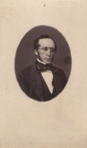
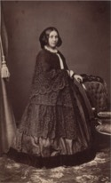

Beaubien-Perrault-Benington - Person Sheet
Beaubien-Perrault-Benington - Person Sheet

Birth19 Sep 1817, County Cork, Ireland20
Death4 Apr 1890, Québec, Québec
Occupationavocat, sherif, politicien
FatherRichard Israel Alleyn
MotherMargaret O'donovan
Spouses

Birth13 Mar 1825, St-Jean-Port-Joli, Québec20
Death20 Dec 1888, Québec, Québec20
FatherPhilippe Joseph Aubert De Gaspé (1786-1871)
MotherSusanne Allison (~1795-1847)
Marriage15 Mar 1849, Québec, Québec20
ChildrenMargaret (1850-)
Richard Israel Philippe (1852-)
Zoé M. (1854-)
Miriam Suzan Allison (1865-)
Charles (1854-)
J.-Edmond (1857-)
Notes for Charles Joseph Alleyn
[Castonguay] Maire de Québec et sherif du district de Québec
[DBC] Immigrated to Québec around 1837. Called to the Bar in 1840 and became an outstanding lawyer who was respected especially by French Canadians as well as by the Irish. By 1849, he had joined the annexationists and supported Joseph Légaré. He was elected mayor of Québec in 1854, but defeated in 1855. Elected MLA for Québec City in 1854. Declared himself in favor of the abolition of the seigneurial system. Commissioner of public works under McDonald and Cartier (1857-1858). Provincial secretary for Canada East (1858-62). His 1857 election was declared invalid, but he was reelected by acclamation in 1860 in Québec West. Sheriff of the district of Québec in 1866, till his death in 1890.
21 Né à Myrus Wood, comté de Cork, Irlande, le 11 septembre 1817, du mariage de Richard Israël Alleyn, officier de la Marine Royale, et de Margaret O'Donovan. Il étudia d'abord au Fermoy School, puis à Glougowers, dans le comté de Kildare. En 1834, la famille Alleyn venait s'établir au Canada. Le jeune Alleyn fit ses études légales dans la capitale et fut admis au barreau le 29 septembre 1840. Élu maire de Québec le 13 février 1854, M. Alleyn était choisi, le 22 juillet de la même année, comme député de la même ville. Trois années plus tard, en 1857, il entrait dans le ministère Macdonald en qualité de commissaire en chef des Travaux Publics. Le 7 août 1858, il acceptait le portefeuille de secrétaire provincial dans le ministère Cartier-Macdonald. Il le garda jusqu'au 23 mai 1862. Nommé shérif du district de Québec en 1866, M. Alleyn décéda à Québec le 4 avril 1890. Il avait épousé une des filles de M. Aubert de Gaspé, auteur des Anciens Canadiens.
22 Né dans le comté de Cork (en république d'Irlande), probablement à Myrus Wood, le 19 septembre 1817, fils de Richard Israël Alleyn, commandant dans la
marine royale (fut aussi sous-maître de la Maison de la Trinité de Québec), et de Margaret O'Donovan.
Fit ses études à l'école de Fermoy, dans le comté de Cork, et au Clongowes Wood College, dans le comté de Kildare.
Vers 1837, accompagna sa famille à Québec où, ayant été admis au barreau en 1840, il exerça la profession d'avocat.
Candidat défait aux élections municipales de Québec en 1848. Représenta le quartier Champlain au conseil municipal de Québec de 1851 à 1857 et fut maire en
1854-1855. Élu député de la cité de Québec en 1854; se rangea du côté des réformistes. Fit partie du ministère Macdonald-Cartier: conseiller exécutif du 26
novembre 1857 au 29 juillet 1858 et commissaire des Travaux publics du 26 novembre 1857 au 1er août 1858. Réélu en 1858, mais l'élection fut annulée le 16
avril 1860. Élu sans opposition dans Québec-Ouest à une élection partielle le 7 mai 1860; de tendance conservatrice. Membre du ministère Cartier-Macdonald:
conseiller exécutif du 6 août 1858 au 23 mai 1862 et secrétaire provincial du Canada du 7 août 1858 au 23 mai 1862. Réélu en 1861, sans opposition, et en 1863;
de tendance conservatrice. Son mandat de député prit fin avec sa nomination comme shérif du district de Québec, le 17 août 1866. Occupa ce poste jusqu'à sa mort,
mais, à partir de 1883, exerça cette fonction conjointement avec Étienne-Théodore Pâquet. Fut le premier directeur, en 1867, de la nouvelle prison, située sur les
plaines d'Abraham.
Fait conseiller de la reine en 1857. Major dans la milice. Administrateur de la Compagnie du chemin de fer de la rive nord. Président de la St. Patrick's Society et
du St. Patrick's Catholic and Literary Institute of Quebec.
Décédé à Québec, le 4 avril 1890, à l'âge de 72 ans et 6 mois. Inhumé dans le cimetière Woodfield, dans la paroisse catholique St. Patrick, le 7 avril 1890.
Avait épousé dans la paroisse Notre-Dame de Québec, le 15 mai 1849, Zoé Aubert de Gaspé, fille de Philippe-Joseph Aubert de Gaspé, avocat, seigneur et futur
auteur des Anciens Canadiens, et de Susanne Allison.
Frère de Richard Alleyn. Oncle et beau-père de John Sharples (fils). Petit-fils par alliance de Pierre-Ignace Aubert de Gaspé. Beau-frère par alliance de
William Power et de Georges- René Saveuse de Beaujeu. Oncle de Georges-Raoul-Léotalde-Guichard-Humbert Saveuse de Beaujeu.
Bibliographie: DBC.
[DBC] Immigrated to Québec around 1837. Called to the Bar in 1840 and became an outstanding lawyer who was respected especially by French Canadians as well as by the Irish. By 1849, he had joined the annexationists and supported Joseph Légaré. He was elected mayor of Québec in 1854, but defeated in 1855. Elected MLA for Québec City in 1854. Declared himself in favor of the abolition of the seigneurial system. Commissioner of public works under McDonald and Cartier (1857-1858). Provincial secretary for Canada East (1858-62). His 1857 election was declared invalid, but he was reelected by acclamation in 1860 in Québec West. Sheriff of the district of Québec in 1866, till his death in 1890.
21 Né à Myrus Wood, comté de Cork, Irlande, le 11 septembre 1817, du mariage de Richard Israël Alleyn, officier de la Marine Royale, et de Margaret O'Donovan. Il étudia d'abord au Fermoy School, puis à Glougowers, dans le comté de Kildare. En 1834, la famille Alleyn venait s'établir au Canada. Le jeune Alleyn fit ses études légales dans la capitale et fut admis au barreau le 29 septembre 1840. Élu maire de Québec le 13 février 1854, M. Alleyn était choisi, le 22 juillet de la même année, comme député de la même ville. Trois années plus tard, en 1857, il entrait dans le ministère Macdonald en qualité de commissaire en chef des Travaux Publics. Le 7 août 1858, il acceptait le portefeuille de secrétaire provincial dans le ministère Cartier-Macdonald. Il le garda jusqu'au 23 mai 1862. Nommé shérif du district de Québec en 1866, M. Alleyn décéda à Québec le 4 avril 1890. Il avait épousé une des filles de M. Aubert de Gaspé, auteur des Anciens Canadiens.
22 Né dans le comté de Cork (en république d'Irlande), probablement à Myrus Wood, le 19 septembre 1817, fils de Richard Israël Alleyn, commandant dans la
marine royale (fut aussi sous-maître de la Maison de la Trinité de Québec), et de Margaret O'Donovan.
Fit ses études à l'école de Fermoy, dans le comté de Cork, et au Clongowes Wood College, dans le comté de Kildare.
Vers 1837, accompagna sa famille à Québec où, ayant été admis au barreau en 1840, il exerça la profession d'avocat.
Candidat défait aux élections municipales de Québec en 1848. Représenta le quartier Champlain au conseil municipal de Québec de 1851 à 1857 et fut maire en
1854-1855. Élu député de la cité de Québec en 1854; se rangea du côté des réformistes. Fit partie du ministère Macdonald-Cartier: conseiller exécutif du 26
novembre 1857 au 29 juillet 1858 et commissaire des Travaux publics du 26 novembre 1857 au 1er août 1858. Réélu en 1858, mais l'élection fut annulée le 16
avril 1860. Élu sans opposition dans Québec-Ouest à une élection partielle le 7 mai 1860; de tendance conservatrice. Membre du ministère Cartier-Macdonald:
conseiller exécutif du 6 août 1858 au 23 mai 1862 et secrétaire provincial du Canada du 7 août 1858 au 23 mai 1862. Réélu en 1861, sans opposition, et en 1863;
de tendance conservatrice. Son mandat de député prit fin avec sa nomination comme shérif du district de Québec, le 17 août 1866. Occupa ce poste jusqu'à sa mort,
mais, à partir de 1883, exerça cette fonction conjointement avec Étienne-Théodore Pâquet. Fut le premier directeur, en 1867, de la nouvelle prison, située sur les
plaines d'Abraham.
Fait conseiller de la reine en 1857. Major dans la milice. Administrateur de la Compagnie du chemin de fer de la rive nord. Président de la St. Patrick's Society et
du St. Patrick's Catholic and Literary Institute of Quebec.
Décédé à Québec, le 4 avril 1890, à l'âge de 72 ans et 6 mois. Inhumé dans le cimetière Woodfield, dans la paroisse catholique St. Patrick, le 7 avril 1890.
Avait épousé dans la paroisse Notre-Dame de Québec, le 15 mai 1849, Zoé Aubert de Gaspé, fille de Philippe-Joseph Aubert de Gaspé, avocat, seigneur et futur
auteur des Anciens Canadiens, et de Susanne Allison.
Frère de Richard Alleyn. Oncle et beau-père de John Sharples (fils). Petit-fils par alliance de Pierre-Ignace Aubert de Gaspé. Beau-frère par alliance de
William Power et de Georges- René Saveuse de Beaujeu. Oncle de Georges-Raoul-Léotalde-Guichard-Humbert Saveuse de Beaujeu.
Bibliographie: DBC.